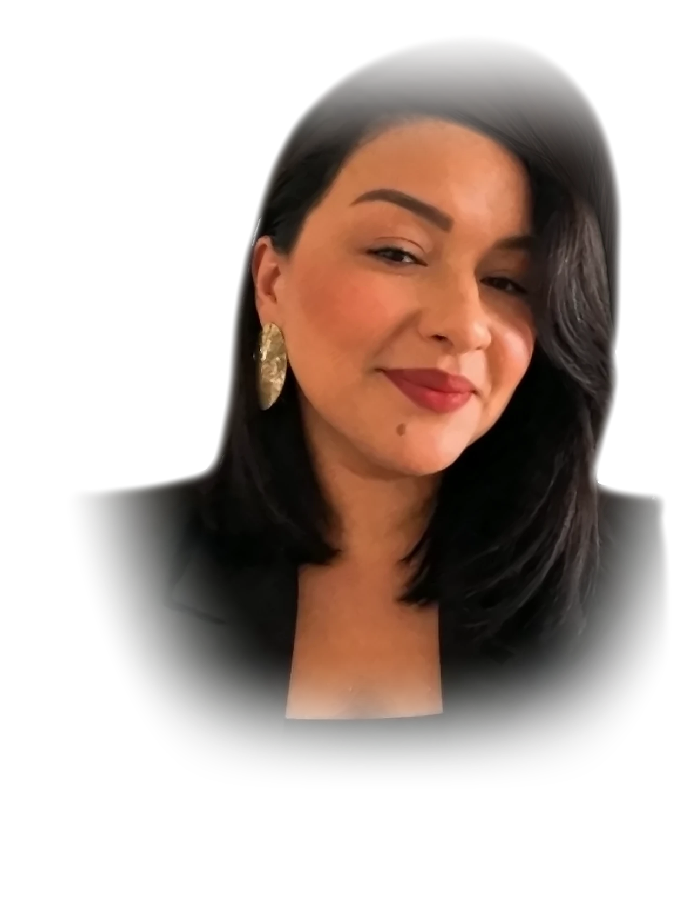
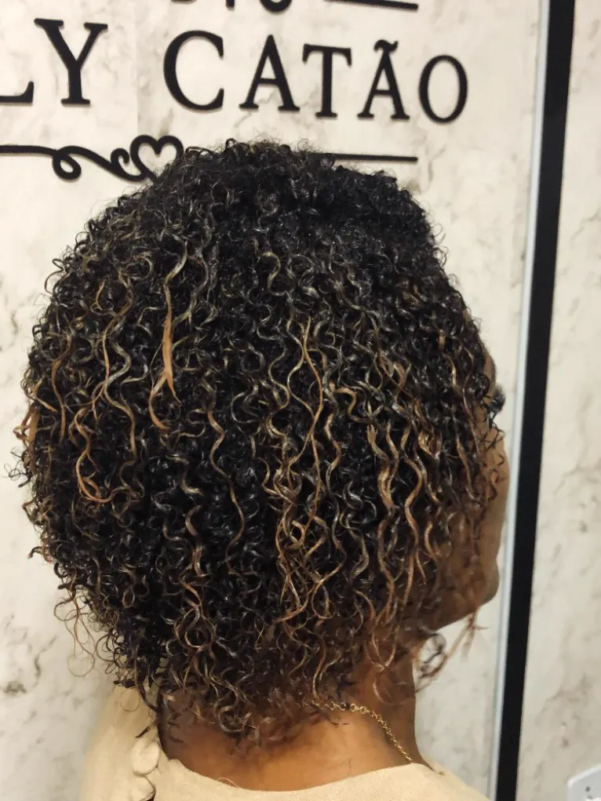
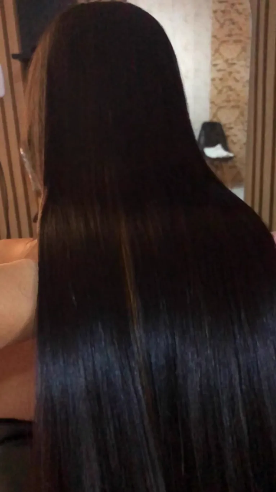

Seu cabelo merece um cuidado só seu.
Loiros perolados, mechas iluminadas e cabelos com brilho de verdade, com atendimento exclusivo no Studio Jully Catão, em Lauro de Freitas.
Com hora marcada · vagas limitadas

-
Atendimento exclusivoUma cliente por vez
-
Especialista em corDo escuro ao loiro perolado
-
Saúde do fioTécnica e produtos profissionais
Luz. Brilho. Cuidado.
No Studio Jully Catão, cada transformação começa pelo diagnóstico do seu fio e termina num cabelo que você reconhece no espelho: cor pensada para você, brilho de verdade e fio saudável.
-

-

Cada cliente que senta na minha cadeira sai com mais do que um cabelo bonito.
Sai com a autoestima lá em cima.
Sou a Juliane Catão, cabeleireira apaixonada por transformação. Meu atendimento é exclusivo: do diagnóstico ao finalizado, seu horário é só seu.
- DiagnósticoSeu fio é avaliado antes de qualquer química
- Sob medidaCor pensada para o seu tom e o seu estilo
- Brilho realBrilho de verdade, cuidando da saúde do fio
Esse atendimento é para você se…
Sonha com o loiro, mas tem medo de estragar o fio
Quer iluminar sem perder a sua base morena
Tem cachos e quer luz sem perder a definição
Quer atenção total, sem correria e sem encaixe
O que está incluso no seu atendimento
Avaliação do fio
Antes de qualquer química, a Jully avalia o seu cabelo.
Avaliação por fotos
Muitas vezes pelo próprio WhatsApp, antes de marcar.
Finalização no studio
Você sai pronta, com o cabelo finalizado.
Atendimento com a Jully
Do diagnóstico ao finalizado, com a mesma profissional.
Produtos profissionais
Técnica e produtos que preservam a saúde do fio.
Resultado que dura
Cor e brilho pensados para o seu dia a dia.
Quem viveu, recomenda
-
Cliente do studioLoiros e Mechas
“Eu tinha medo de clarear e estragar o cabelo. Saí com o loiro perolado que eu sonhava, com o fio macio e cheio de brilho.”
-
Cliente do studioCachos Iluminados
“A Jully entendeu exatamente o que eu queria. Meus cachos ficaram iluminados sem perder a definição.”
-
Cliente do studioAlisamento e Brilho
“Saí com o cabelo alinhado e um brilho que todo mundo elogiou. Já marquei a próxima.”
Textos de exemplo · os relatos reais estão no destaque FEEDBACK do Instagram
Ver feedbacks no Instagram
Marcas profissionais que a Jully usa
- Wella
- L’Oréal Professionnel
- Kérastase
- Truss
- Braé
Dúvidas frequentes
Ficou alguma dúvida? A Jully responde tudo pelo WhatsApp.
Perguntar à JullyComo faço para agendar?
É só tocar em qualquer botão Agendar desta página. Você cai direto no WhatsApp do studio, conta o que deseja e a Jully confirma o melhor dia e horário para você.
Onde fica o studio?
Em Lauro de Freitas – BA. O endereço completo é enviado pelo WhatsApp junto com a confirmação do seu horário.
Quanto tempo dura um procedimento de loiro?
Depende do comprimento, da cor atual e do resultado que você deseja. Uma transformação para o loiro costuma levar algumas horas — por isso cada horário é exclusivo, sem pressa.
Preciso fazer avaliação antes?
Para mudanças maiores, como sair do escuro para o loiro, a Jully avalia o seu fio antes de começar. Muitas vezes isso pode ser feito pelo próprio WhatsApp, com fotos do seu cabelo atual.
Sua transformação está a um clique
Fale com a Jully pelo WhatsApp, conte o que você deseja e garanta o seu horário.
Com hora marcada · vagas limitadas
- Agendamento
pelo WhatsApp - Vagas limitadas
na agenda - Endereço enviado
na confirmação